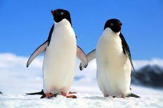

Vidis litro abertis. Tá deprimidis, eu conheço uma cachacis que pode alegrar sua vidis. Pra lá , depois divoltis porris, paradis.Posuere libero varius. Nullam a nisl ut ante blandit hendrerit. Aenean sit amet nisi.
Leite de capivaris, leite de mula manquis sem cabeça. Sala verde é a melhor. apenas